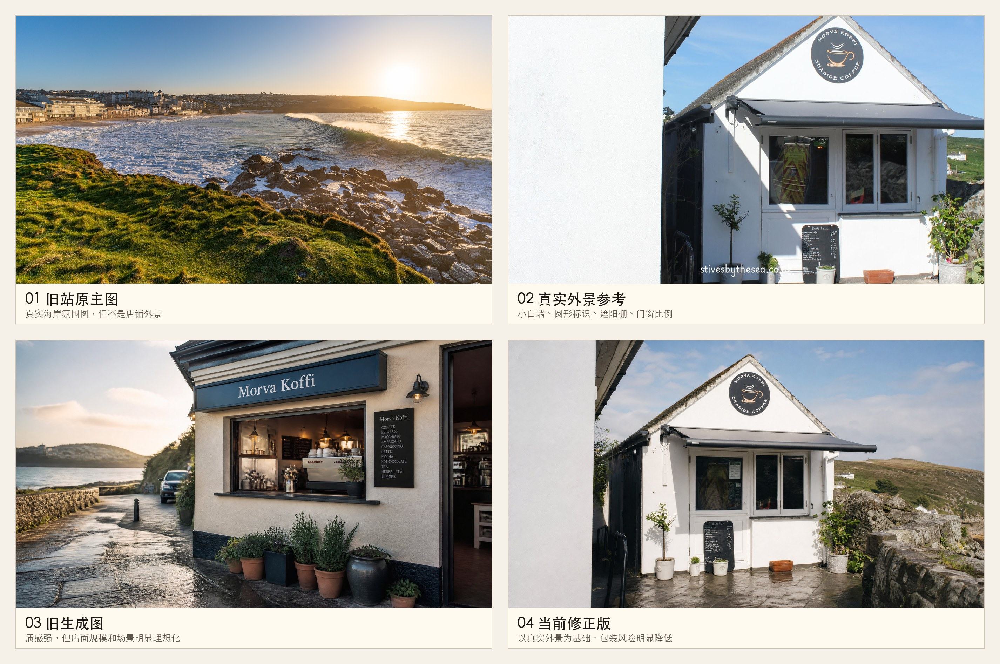
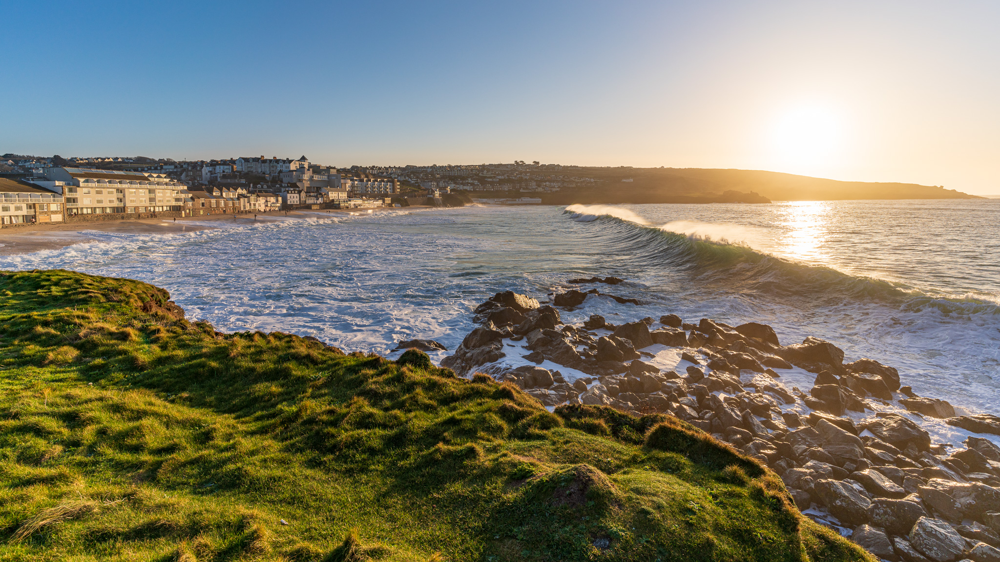
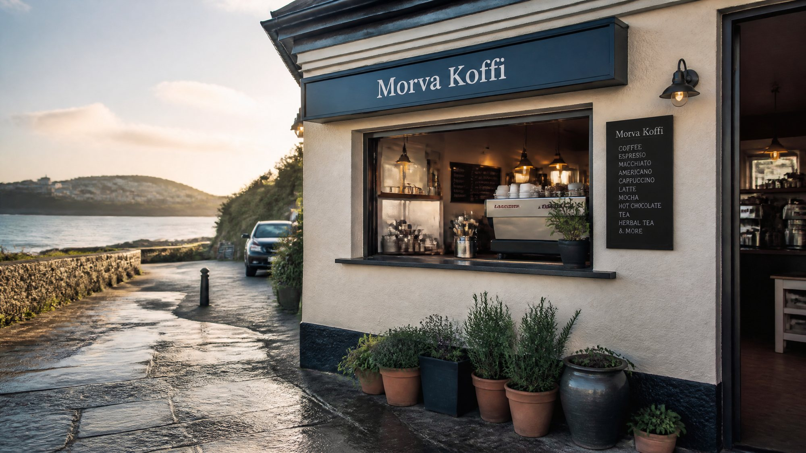
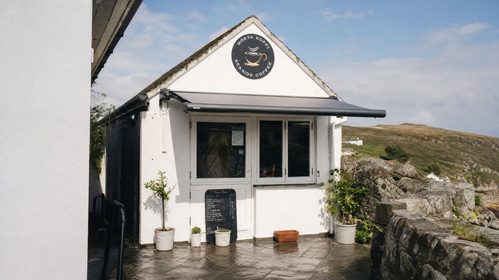
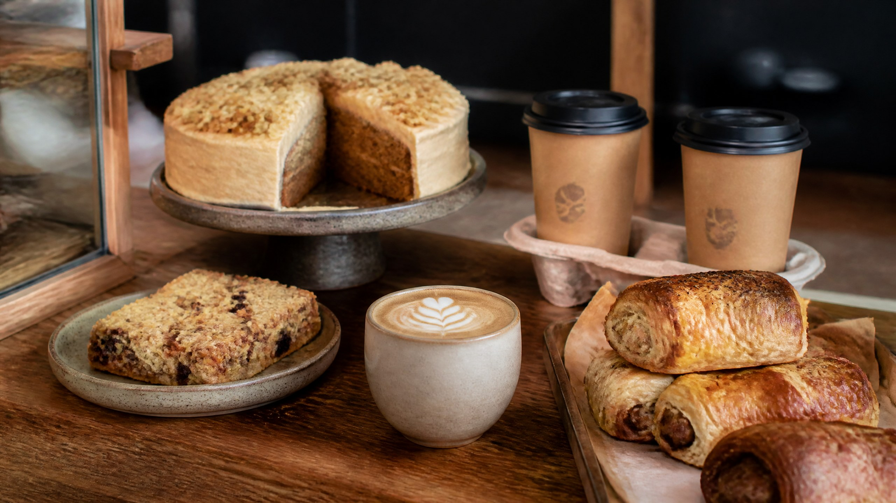

Morva Koffi · Hero image review
原主图与现主图真实性对比
复查结论：上一版生成主图属于 中到偏高过度包装；当前修正版保留白墙、三角山墙、圆形标识、遮阳棚和小尺度门窗， 包装风险已降到 低到中等。它仍是生成图，不应标注为实拍照片。
Current Risk: Low Medium

四图总览
旧生成图已降包装，当前主图更接近真实店铺结构。
旧生成图的问题集中在大招牌、开放咖啡窗口、海边道路和室内吧台；修正版改回真实小店体量和 Barnoon 附近步行环境。

旧站原主图
真实海岸风景，但不是店铺外景。
地点氛围强，但无法直接告诉游客店铺长什么样，也不突出 Barnoon 附近的小店位置。

上一版生成主图
更像高级咖啡店广告，但外观被明显重塑。
它加入了大横向招牌、开放咖啡窗、室内吧台和更戏剧化的临海道路，容易误导访客对门店规模的预期。

当前修正版主图
保留高级摄影质感，但回到真实小店尺度。
修正版使用真实外景作图生图参考，保留白色外墙、三角山墙、圆形标识、遮阳棚和小尺度门窗。

当前柜台辅图
作为氛围图使用，不暗示真实室内陈设。
第二版去掉了可读价格和菜单词，降低了把虚构价格写进图片里的风险。
建议
- 当前修正版已保留真实外景的关键结构，适合继续作为提案主图。
- 仍建议向客户说明图片为生成式商业视觉，不是实拍；客户若能提供近期实拍，应优先替换成实拍。
- 旧站海岸图可转为氛围辅图，不建议作为新站主图，因为它不解决“怎么找到店”的核心问题。